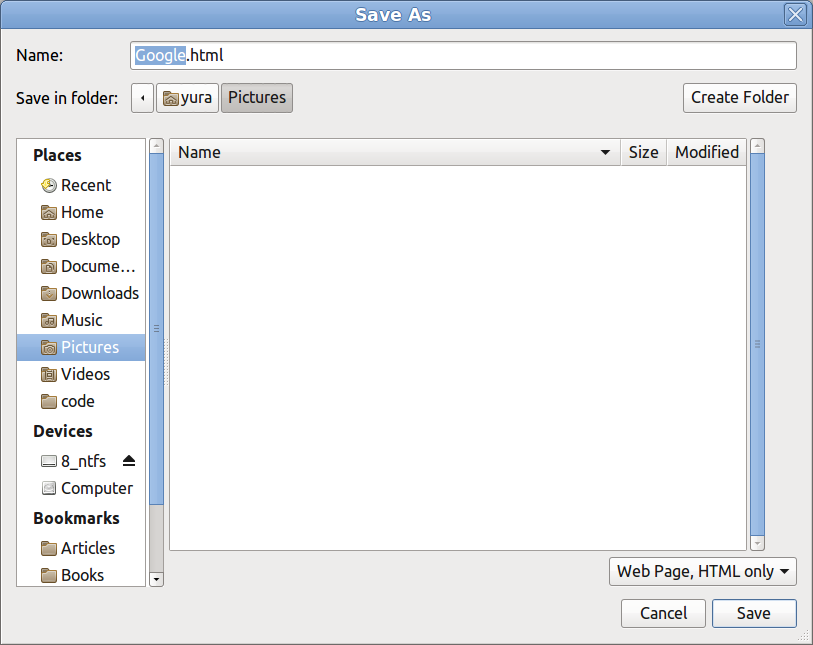

Как уже было сказано в части 3, не только файловый менеджер, но и любая другая программа может показывать пользователю несмонтированные тома. Так, Firefox отображает несмонтированные тома на левой панели диалога открытия/сохранения файла. Чтобы продемонстрировать это, возьмем все ту же флешку, подключим ее, размонтируем том с меткой 8_ext, а том с меткой 8_ntfs оставим смонтированным. Запустим Firefox, перейдем на какой-нибудь сайт и попробуем сохранить страничку. Увидим картину, приведенную на рисунке 1.
Нет ничего плохого в том, что Firefox показывает несмонтированный том. Но, поскольку я использую Firefox часто, меня это не сильно радует (и особенно расстраивает, когда отображется раздел, зарезервированный для PAM USB, но PAM USB - это отдельная тема).
Что ж, поиграем в прятки. "Глобальный" hook сделать можно (например, на уровне модуля ядра). Да, придеться повозиться. Затраченные усилия не оправдают результат. Поэтому воспользуемся известным трюком с перехватом функции, расположенной в разделяемой библиотеке. Я не стал смотреть исходный код Firefox, потому что значок извлечения напротив тома с меткой 8_ntfs выглядит точно так же (ну почти), как в случае c Nemo. Кроме того, Firefox вроде бы построен на библиотеке Gtk...
Hook оставим неизменным. Не будем переделывать Makefile. Сделаем лишь новый скрипт-обертку. Просто скопипастим обертку для Nemo и заменим nemo на firefox. Остается только поместить его ~/bin и сделать исполняемым.
Запустим Firefox посредством обертки и получим картину, приведенную на рисунке 2.

Том с меткой 8_ext исчез! Результат, как говорится, превзошел все ожидания.
Трюк с подменой функции помогает во многих ситуациях. Но этот прием ненадежный. Очевидно, что Firefox может быть запущен не посредством скрипта-обертки, а напрямую. Запустим Firefox c помощью обертки и проверим
значение LD_PRELOAD:
$ ~/bin/firefox & $ ps auxe | grep 'firefox' | grep 'LD_PRELOAD'
и получим (большая часть вывода опущена):
yura 8195 ... pts/5 ... /usr/lib/firefox/firefox ... LD_PRELOAD=/home/yura/bin/libnemohook.so ...
Если же запустить Firefox напрямую, т.е. $ /usr/bin/firefox &, то в LD_PRELOAD
будет пусто, и наш hook не будет принят во внимание.
Я пытался проверить эту ситуацию в действии. А именно: пытался заставить Firefox запустить еще один Firefox
(например, при открытии нового окна в режиме инкогнито), т.е. чтобы Firefox запустил новый процесс.
И затем посмотреть, сохранилось ли значение LD_PRELOAD у нового процесса. У меня не получилось:
Firefox при открытии нового окна не создает новый процесс. То же наблюдается и для файлового менеджера Nemo.
Чисто теоретически можно утверждать, что программа может запускать другие программы как ей будет угодно.
Например, как команду оболочки с сохранением переменных окружения, в том числе PATH (в этом
случае, скорее всего, сначала запустится наш скрипт-обертка, а уже за ним - программа). Но переменные
окружения могут быть очищены перед запуском дочернего процесса. Много нюансов есть и с системыми вызовами,
такими как execve(). И конечно же, защита наподобие
AppArmor может запрещать загружать библиотеки
откуда попало, а только из системных каталогов, таких как /usr/lib. В последнем случае Firefox
заработает, но hook загружен не будет, а в терминале появится сообщение вроде:
ERROR: ld.so: object '/home/yura/bin/libnemohook.so' from LD_PRELOAD cannot be preloaded (cannot open shared object file): ignored.